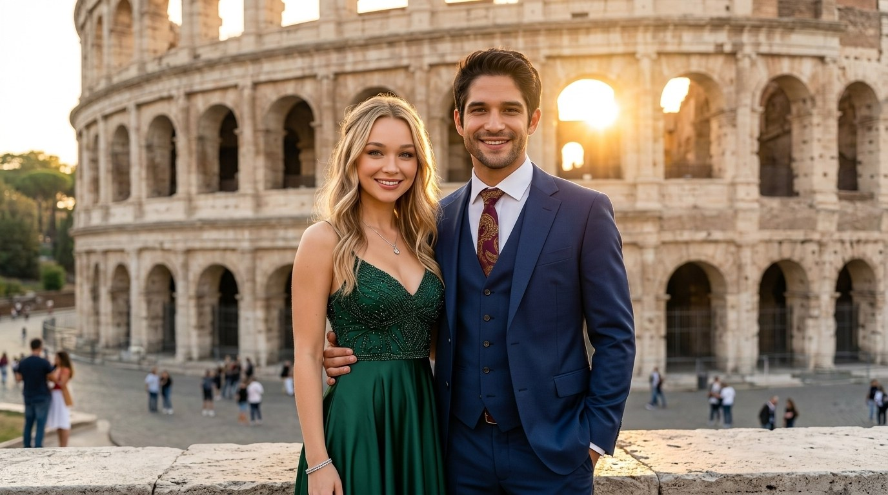
Jennifer és Tyler
közös története
Egy egyetemi rendezvényen találkoztak. Azóta együtt ültek a szenátusban, tanárokkal próbáltak ki digitális tananyagokat, és szörfdeszkát vittek a mérnöki bemutatóra. Jennifer Chease és Tyler Posey története Washingtontól Nova Aurelia partjáig.
Jennifer első befektetései
Jennifer Chease 1994-ben született Washingtonban. Gyerekként táncolt, ruhákat rajzolt, és szívesen időzött a színfalak mögött egy-egy fellépés után. Egy ideig otthon tanult, majd 2002-ben iskolába került Nova Aureliában. Négy évvel később Massachusettsbe költözött, hogy a Phillips Academy andoveri bentlakásos iskolájában folytassa tanulmányait. Itt fordult az érdeklődése a kereskedelem felé. Mire 2010-ben elballagott, már a Costco és a Johnson & Johnson részvényese volt.
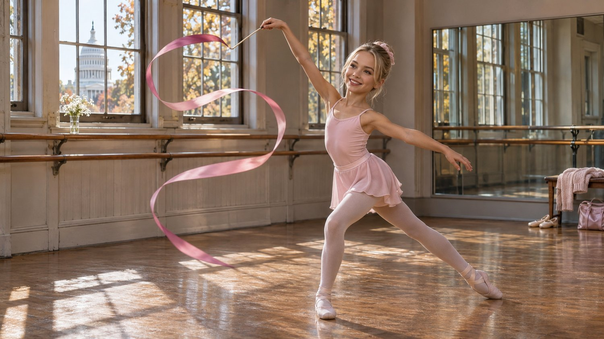
A divat egészen másfajta befektetői leckét adott neki. Egy ruhát a szabása miatt választott ki, a divatházat viszont már a beszállítói, az üzletei és a vásárlói alapján ítélte meg. Ezt a kétféle kíváncsiságot vitte magával a Waikiki Economics University marketingkommunikációs képzésére. Később, amikor már maga is divatházak tulajdonosa volt, egy külföldi bemutatón éppolyan szívesen beszélgetett a tervezőkkel, mint az üzleti partnerekkel.
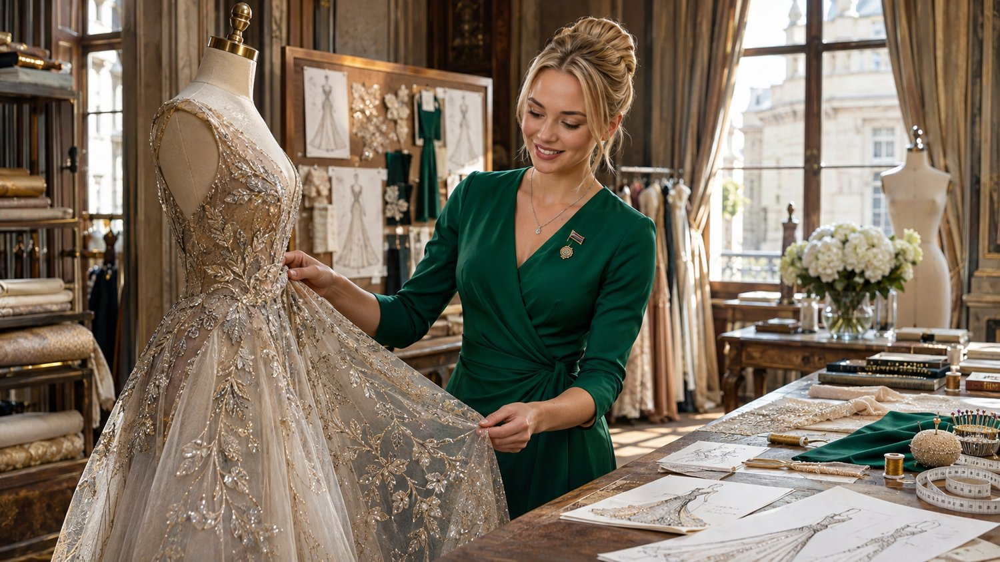
A nap, amikor Jennifer hercegnő lett
2005. augusztus 4-én Jennifer édesapját, Chease Youngot Nova Aureliában királlyá koronázták. A Parlament előtti főtéren Jennifer a nővére mellett állt, amikor édesanyjuk királynéi, öccsük hercegi, a két lány pedig hercegnői címet kapott. A család ettől a naptól az ország ünnepein is együtt jelent meg. Jennifer még általános iskolába járt. Az osztálytársai másnap azzal fogadták, hogy milyen volt a tömeg a tér túloldaláról nézve, és hallotta-e egyáltalán a zenét odafent.
Az andoveri iskolaújság szerkesztőségében
A bentlakásos iskolában Jennifer jelentkezett egy diákbemutató plakátjának elkészítésére. A jelmezekről készült első fotók szépen mutattak a szerkesztőség nagy képernyőjén, a folyosón kifüggesztett, fekete-fehér lapon viszont alig lehetett kivenni a részleteket. Újra elhívta a szereplőket, és ezúttal mozgás közben fényképezte őket. Az egyik táncos fordulata olyan jól kirajzolódott az egyszerű háttér előtt, hogy végül egyetlen felvétel került a plakátra. A bemutató napján Jennifer a bejáratnál látta viszont, ahogy a nézők a képen szereplő lányt keresik a színpadon.
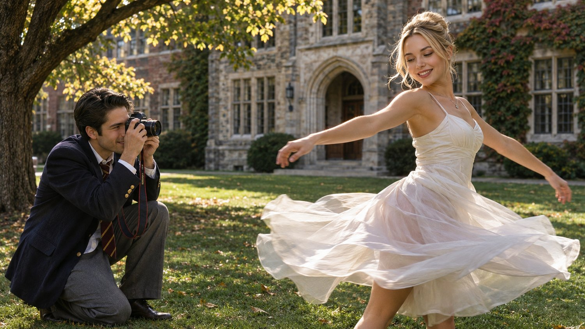
Tyler útja a forgatástól a műhelyig
Tyler Posey 1992-ben született a kaliforniai Santa Monicában. A forgatásokon korán megszokta, hogy ugyanazt a jelenetet a színész, az operatőr és a hangmérnök három különböző munkaként éli meg. Szerette a próbákat, amikor még oda lehetett állni a kamera mögé, és visszanézni, mi látszik egy mozdulatból. A sportban különösen kedvelte a szörfözést. A vízen a testsúly legkisebb áthelyezésére is reagált a deszka, és egy elrontott fordulót a következő hullámon rögtön megpróbálhatott újra.
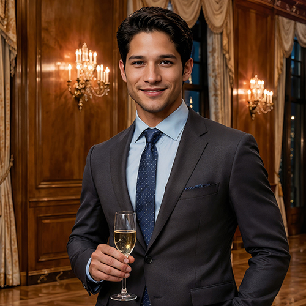
Mérnöki és gazdasági tanulmányai során az érdekelte, hogyan kerül egy ötlet a rajzasztalról olyan emberek kezébe, akik naponta használják majd. A műhelyben könnyű volt megmutatni egy új eszköz előnyeit. Sokkal többet tanult belőle, amikor elvitte egy iskolába, és figyelte, mihez kezd vele a tanár egy teljes osztály előtt. Későbbi bemutatóin is szeretett az első próbálkozás idejére a helyszínen maradni.
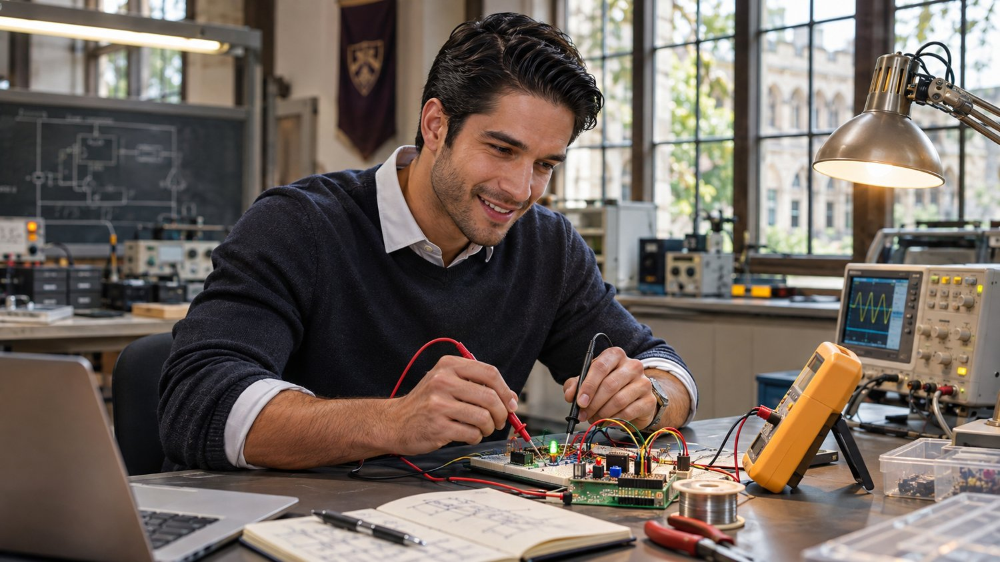
Találkozás az egyetemen
Jennifer és Tyler Posey egy egyetemi rendezvényen ismerkedtek meg. 2012 őszétől ugyanahhoz a társasághoz tartoztak, mint Jennifer öccse, Raimondo és annak akkori párja, Bailey Pickett. Órák után gyakran együtt maradtak. Tyler filmes történeteket mesélt, Jennifer pedig szívesen vitatkozott vele arról, miért lesz közönségkedvenc egy film, miközben egy hasonló költségvetésű produkció észrevétlen marad. A kémfilmekről különösen határozott véleménye volt.
Tyler magabiztosan mozgott a kamera előtt, de egy eszközt is örömmel szétszedett, ha meg akarta érteni a működését. Hallgatóként vidéki iskolák számára szervezett ösztöndíjprogramot digitális taneszközök beszerzésére. Jennifer közben azt tanulta, hogyan lehet egy ötlethez tartós pénzügyi hátteret találni. Az órarendjük idővel kettévált, a találkozásaik megmaradtak. Mire 2015-ben végeztek az alapképzéssel, a család már párként számolt velük.
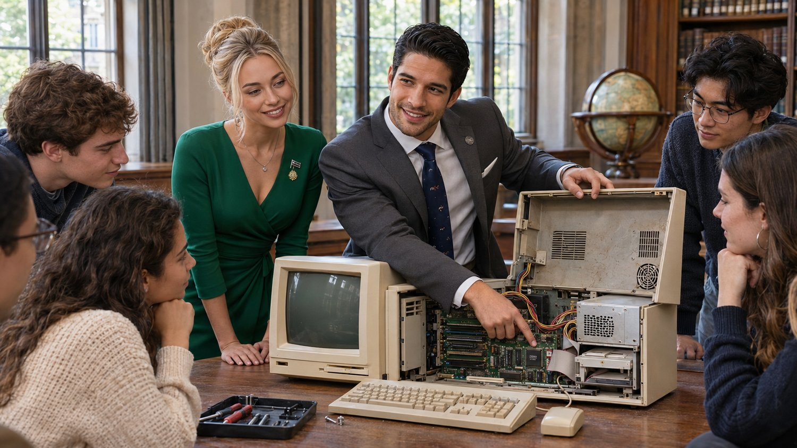
Az első iskolai számítógépek átadása
Tyler egyetemi ösztöndíjprogramjának első gépeit maguk a hallgatók vitték el egy vidéki iskolába. A délelőttöt a telepítésre szánták, ebéd utánra tervezték a programozási foglalkozást. Hamar kiderült, hogy a tanteremben csak az ajtó mellett ér el a vezeték nélküli hálózat jele. Amíg két hallgató áthelyezte a hozzáférési pontot, Tyler a tanárral együtt olyan feladatot keresett, amelyet a már bekapcsolt gépeken helyben is meg lehetett oldani.
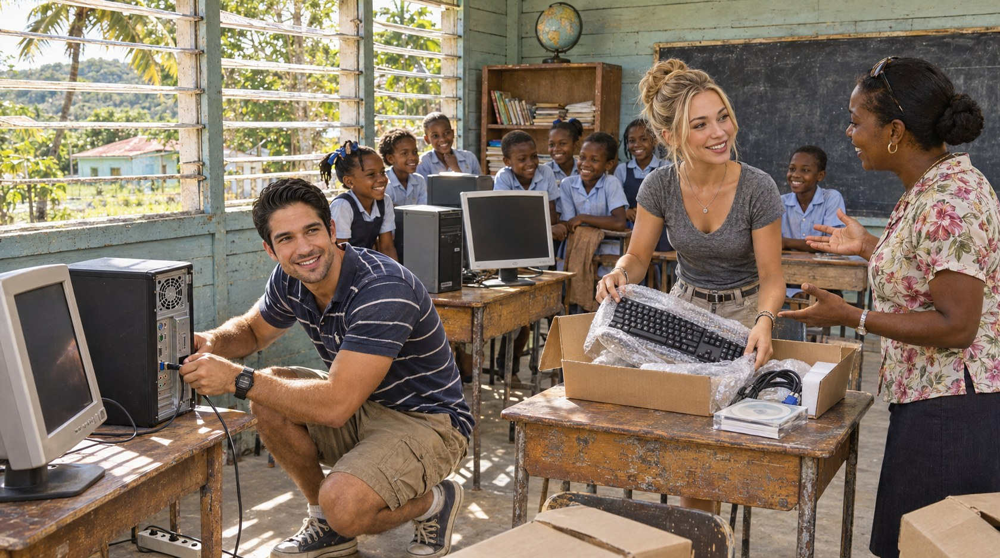
Aznap minden diák megírhatta az első rövid programját. A következő kiszállítás előtt az egyetemisták már megkérték a fogadó iskolát, hogy küldjön alaprajzot a teremről, és jelölje be a csatlakozókat is. Ez a kézzel rajzolt lap sokáig része maradt Tyler előkészítő csomagjának.
A Miss Supranational döntője
2014-ben a Nova Aurelia Kulturális Központ adott otthont a Miss Supranational döntőjének. Jennifernek ritka élmény volt egy mezőnyben indulni Angelinával, Bailey Pickettel és Selena Gomezzel. A főpróbán ugyanazon a keskeny lépcsőn gyakorolták a bevonulást, a döntőben viszont mindenkinek külön kellett kiállnia a zsűri elé. Jennifer második helyen végzett Bailey mögött. Selena harmadik, Angelina negyedik lett.
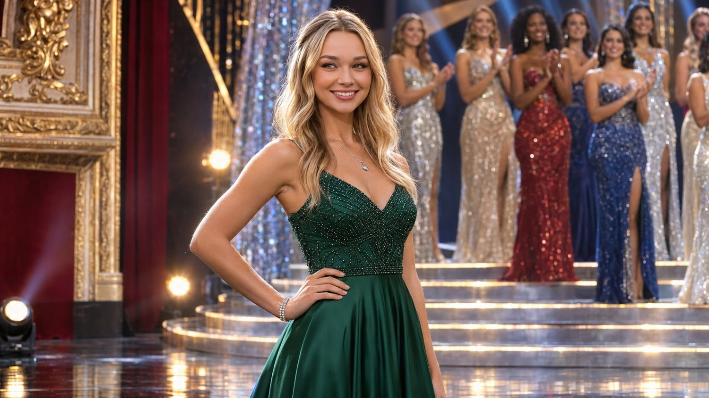
A család később gyakran emlegette a négyes eredményét. Jennifer a közös készülődést szerette felidézni, amikor még kölcsön lehetett kérni egymástól egy hajtűt, és senki sem tudta, kinek kell majd elsőként visszamennie a színpadra. A fényképezés után mind a négyüknek ugyanaz volt az első dolga. Levették a cipőjüket.
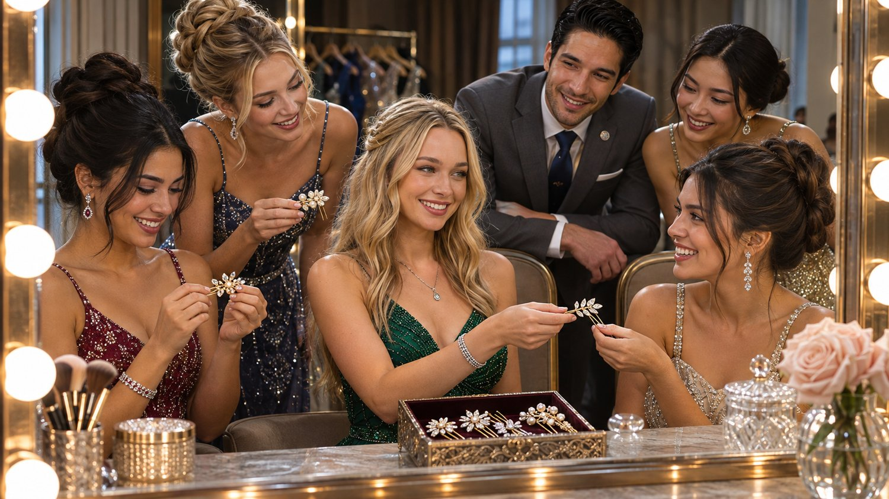
Két hely a szenátusban
2015-ben mindketten szenátusi kinevezést kaptak. Jennifer a mandátuma mellett folytatta közgazdasági tanulmányait. Későbbi doktori kutatásában azt vizsgálta, mi történik egy családnak folyósított támogatással, miután a pénz megérkezik a számlájára. A szenátusban a közpénzek felhasználásával és a digitális ügyintézés szabályaival foglalkozott. Egy új szolgáltatás költségvetésében külön kereste azt a sort, amelyből a bevezetés után az ügyfélszolgálatot és a karbantartást fizetik. Tyler az ülésekre gyakran a vidéki iskolák tapasztalataival érkezett. Pontosan tudta, milyen keveset ér egy új gép abban a tanteremben, ahol hónapokig kell várni a javítására.
A digitális alapjogok chartája közös munkájukból született. Az elfogadását követő feladatok közé tartozott az elektronikus azonosítás és aláírás országos bevezetése. A változást egy költöző család példáján lehetett a legjobban látni. A szülő ugyanazzal az azonosítóval jelenthette be az új lakcímet és írhatta alá az iskolai iratokat. Jennifer a hivatalok közötti felelősségmegosztással foglalkozott. Tyler azt próbálta ki, hogyan jut vissza a félbehagyott kérelemhez az ügyfél, ha kitöltés közben megszakad a kapcsolata.
Beruházási meghallgatások a szenátusban
2015 őszén Angelina a szenátus új szárnyába hívta a fejlesztési, infrastrukturális és környezetvédelmi tárca vezetőit. Jennifer és Raimondo több egyeztetésen is részt vett. A megbeszélésekre Jennifer egymás mellé tette egy-egy beruházás eredeti előterjesztését és a következő évre benyújtott költségkérelmet. Az első iratból kiderült, mennyibe kerül az építés. A másodikból már az is látszott, hány ember munkájára lesz szükség a nyitás után.
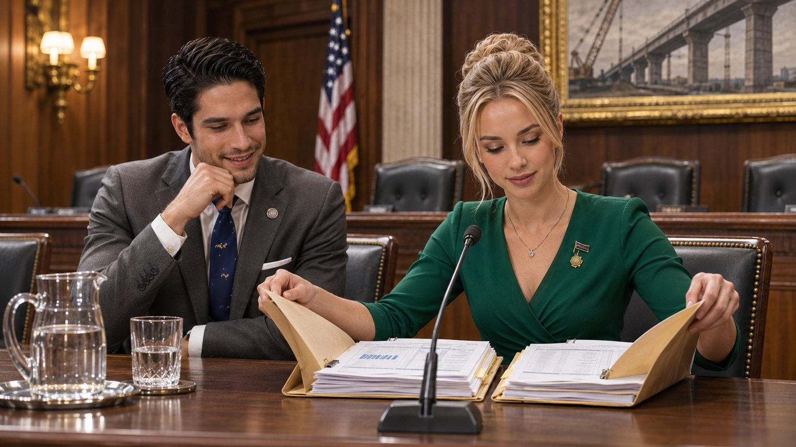
A meghallgatások végén Angelina megbízást kapott, hogy 2016 elejére dolgozza ki a kormányzati működés reformtervét. Jennifer számára ekkor vált rendszeres feladattá a tárcák közötti egyeztetés. Egy közös javaslathoz olykor elég volt ugyanarra az oldalra ültetni az intézmény majdani vezetőjét és azt a tisztviselőt, aki az építési költségeket számolta.
A januári évértékelő és az üdülő kulcsa
2016. január 7-én Chease Young a kormány évértékelőjén az első szenátusi időszak munkáját is számba vette. Jennifer és Tyler közösen egy üdülőt kaptak elismerésként. A nap másik, számukra különösen fontos híre a készpénzforgalom 2018-ra tervezett digitalizálása volt. Amikor az ajándékok átadása után újra a sajtó elé álltak, a kérdések már arról szóltak, hogyan készülhet fel az átállásra az a kereskedő, aki addig minden este kézzel számolta meg a kasszát.
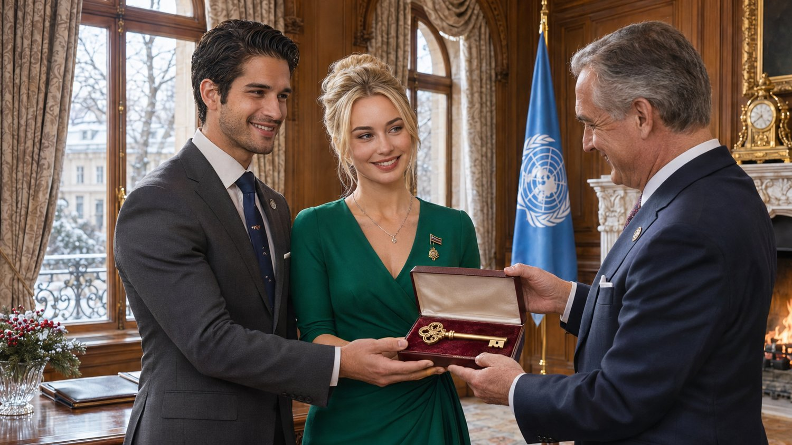
Próbanap a piaci árusokkal
Egy szabad délelőttön Tyler a fizetési rendszer próbakészülékét egy zöldséges standján állította fel. Az első gondot egy visszáru okozta. A vevő két tételt fizetett ki egyszerre, de csak az egyiket akarta visszavinni. A művelet a terminálon működött, a nyomtatott bizonylatról azonban az árus nem tudta megállapítani, melyik tételt vonták vissza. Tyler végigvárta a déli zárást, és a kereskedővel együtt egyeztette a napi forgalmat.
Jennifer a piacon összegyűlt kérdéseket később bevitte egy vállalkozói fórumra. Az ott készült útmutatóban külön példát kapott a részleges visszatérítés és az elrontott összeg javítása. A következő próbanapon már az árus mutatta meg a szomszédjának, melyik bizonylatot kell megőriznie.
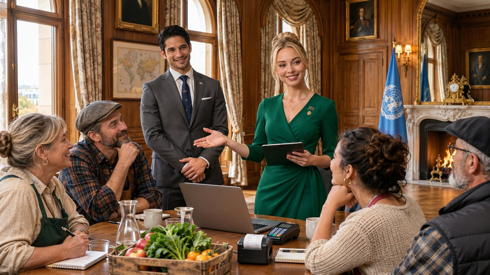
A közgazdasági mesterdiploma
Jennifer 2017-ben fejezte be a Waikiki Economics University közgazdasági mesterképzését. Az utolsó egyetemi féléveket már szenátorként járta végig. Egy támogatás hatását elemezve ugyanazt a kiadást egyszer a költségvetés, egyszer a kedvezményezett család szemszögéből kellett leírnia. Egy utazási ösztöndíj például az egyik kimutatásban szerény tételnek látszott, egy vidéki hallgatónak viszont ettől függött, eljut-e a vizsgájára. Ebből a kérdésből indult ki később a jóléti támogatásokról szóló doktori kutatása is.
Tyler koronázásának napja
2017. október 16-án három ember koronázására gyűlt össze a család. Selena Gomez hercegnői, Taylor Lautner és Tyler Posey hercegi címet kapott. Jennifer számára szokatlan nap volt ez a palotában. Az egykori egyetemi társaság tagjai közül többen állami tisztséget viseltek már, a meghívottak között pedig ott ültek Tyler régi ismerősei a filmvilágból. A szertartást fogadás követte, az ünnepség végén a vendégek együtt nézték a tűzijátékot.
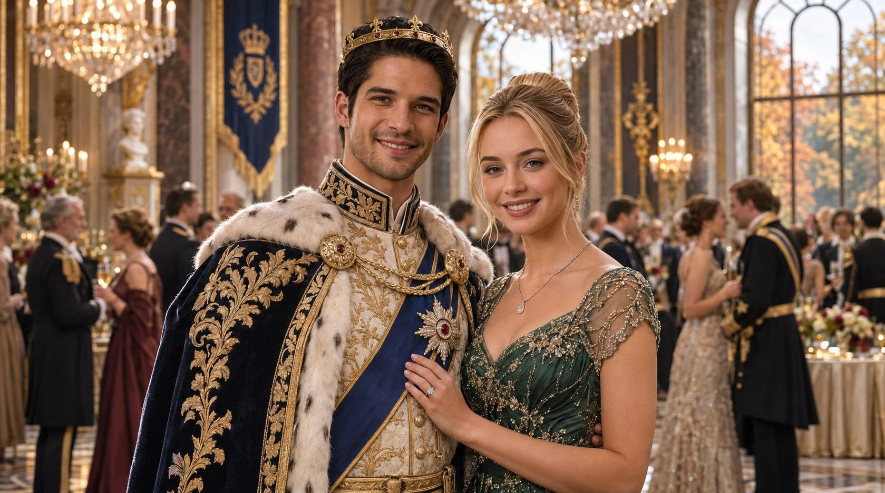
Másnap ugyanazok az ügyek várták őket a szenátusban. A hercegi cím mégis változtatott Tyler munkáján. Egy ifjúsági sportnap vagy egy iskolai bemutató meghívóján a neve most már az udvart is képviselte. Olyan alkalmakat keresett, ahol a diákok vele együtt próbálhattak ki valamit. Jennifer ebben jó társa volt. Ismerte a hivatalos fogadások rendjét, és azt is észrevette, mikor érdemes félretenni az előre megírt kérdéseket.
A párizsi divathét kulisszái mögött
Egy párizsi bemutató előtt Jennifer és Selena együtt ment le a műhelybe. A fotósok odafent a két hercegnő érkezésére vártak, a szabászok közben még egy hosszú kabát esését igazították. Jennifer engedélyt kért, hogy közelről is megmutathassa az anyagot. Aznap a saját felületére a bevonulás mellé felkerült az a néhány másodperc is, amelyen az egyik varrónő kibont egy öltést, majd újra a helyére tűzi az ujjat.
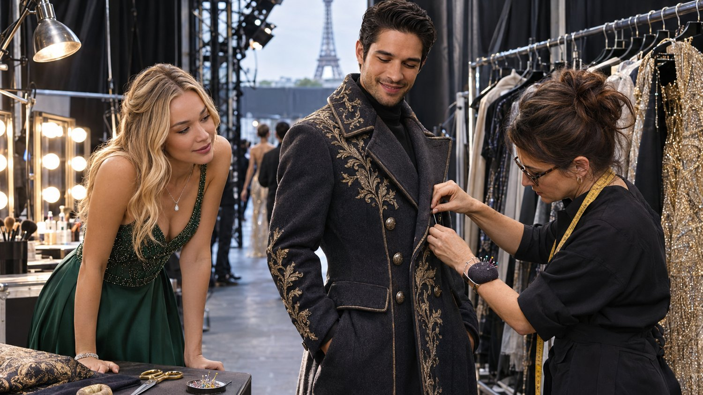
A bemutató után waikiki divatszakos hallgatók a kabátról kérdezték. Jennifer továbbította a kérdéseiket a műhelynek, a választ pedig a készítő nevével együtt tette közzé. Későbbi útjain is elkérte azoknak az embereknek a nevét, akiknek a munkáját a közönség rendszerint csak a kifutón látta.
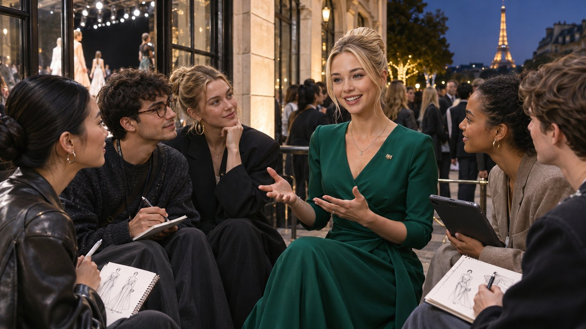
Éjszakai próba az optikai hálózaton
A fővároson kívüli egyik adatkapcsolat átadását éjszakára időzítették. Tyler a helyi mérnökökkel a tartalék útvonalat próbálta ki. Amikor a próbához leválasztották az elsődleges vezetéket, a központban minden jelzőfény visszaváltott zöldre. Az egyik vidéki hivatalban azonban továbbra sem érkezett meg a beküldött irat visszaigazolása. Egy ott maradt ügyintéző telefonja nélkül az átadás rendben lezajlottnak látszott volna.
Tyler megkérte az ügyintézőt, hogy reggelig tartsa meg a próbakérelem számát. A hibát a két útvonal közti átváltásnál találták meg. A javítás után ugyanonnan küldték be újra a kérelmet, és most a hivatalból hívták vissza a központot, hogy megérkezett a nyugta.
A család Thaiföldön
2018 nyarán Jennifer, Angelina és Raimondo a párjaikkal együtt több mint két hetet töltöttek Thaiföldön. Bangkokból a déli szigetek felé utaztak, Phuket partjainál hajóra szálltak, majd bejárták a Phi Phi-szigetek öbleit. Tylernek külön örömet szerzett, hogy a vízhez ezúttal sem verseny, sem bemutató kedvéért nem kellett lesietnie. Az útitervbe belefért egy egész délután a parton.
Ajutthajában helyi történészekkel sétáltak az egykori főváros templomai között. Egy másik napon közösen főztek. A pad thai készítésekor a három testvér ugyanabból a hozzávalókészletből három különböző fogást tett az asztalra. Jennifer későbbi kulturális programjaiban is helyet adott az efféle személyes találkozásoknak. Egy gyűjteményt vagy egy várost sokszor éppen attól az embertől lehet megismerni, aki naponta ott dolgozik.
Vacsora a cannes-i öbölben
A cannes-i filmfesztivál idején Jennifer és Tyler a kikötő helyett az öbölben horgonyzó waikiki jachton fogadták a vendégeiket. A Waikiki Sunset estére kisebb hajókkal érkeztek a rendezők, színészek és producerek. Tyler a fedélzeten régi filmes ismerősökkel találkozott. Jennifer gondoskodott róla, hogy a waikiki alkotók is melléjük ülhessenek. A rövidfilmesek számára a vacsora végén adódott a legjobb alkalom beszélgetni, amikor a vendégek a visszainduló hajókra vártak.
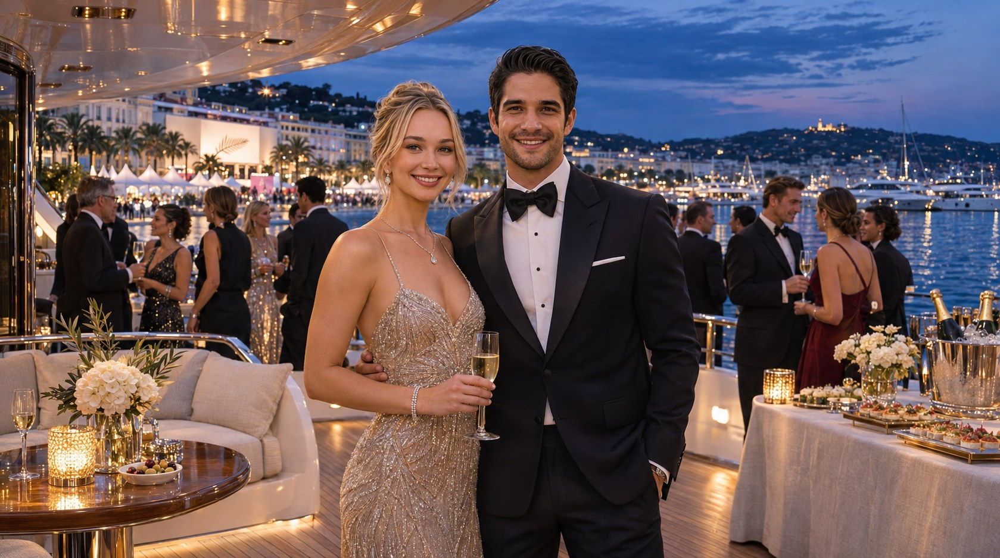
Másnap a kikötőből készült felvételek járták be a sajtót. Otthon külön figyelmet kapott maga a halk járású hajó is. Tyler a fedélzeten forgatott anyagból azoknak a tervezőknek is küldött egy példányt, akiknek a nevét a fesztivál tudósításaiban alig említették.
Ösztöndíj táncosoknak és fiatal alkotóknak
2019 nyarán Jennifer és nővére, Angelina megalapította a Waikiki Jövője Ifjúsági Alapítványt. A munkát érdeklődésük szerint osztották fel. Angelina a kutatói ösztöndíjakat gondozta, Jennifer a művészeti programokat vállalta, Taylor Lautner pedig a sportolókkal foglalkozott. Az induláshoz Nova Aureliában rendeztek adománygyűjtő gálát.
Jennifer a táncosok felkészüléséből jól ismerte azokat a kiadásokat, amelyek egy sikeres felvételi után következnek. Próbaterembe kell járni, fellépőruhát kell szerezni, és haza is kell jutni az esti óráról. Egy vidéki diáknál az utazás önmagában eldöntheti, kitart-e a képzés végéig. Az ösztöndíj értékét ezért Jennifer abban látta, hogy a fiatal a következő próbán is ott lehet. Az alapítvány első évében már több száz diák kapcsolódott be a művészeti, tudományos és sportprogramokba.
Nyílt próba az ösztöndíjasokkal
Az ifjúsági alapítvány egyik vidéki műhelyében Jennifer és Tyler végignézte egy tánccsoport délutáni próbáját. A koreográfus ugyanazt a néhány ütemet ismételtette a növendékekkel. A terem széléről eleinte alig lehetett észrevenni a különbséget. Az egyik táncos végül megmutatta Jennifernek a padlóra ragasztott keskeny csíkot. Ha a fordulat végén túllépett rajta, a következő párnak már rövidebbet kellett lépnie.
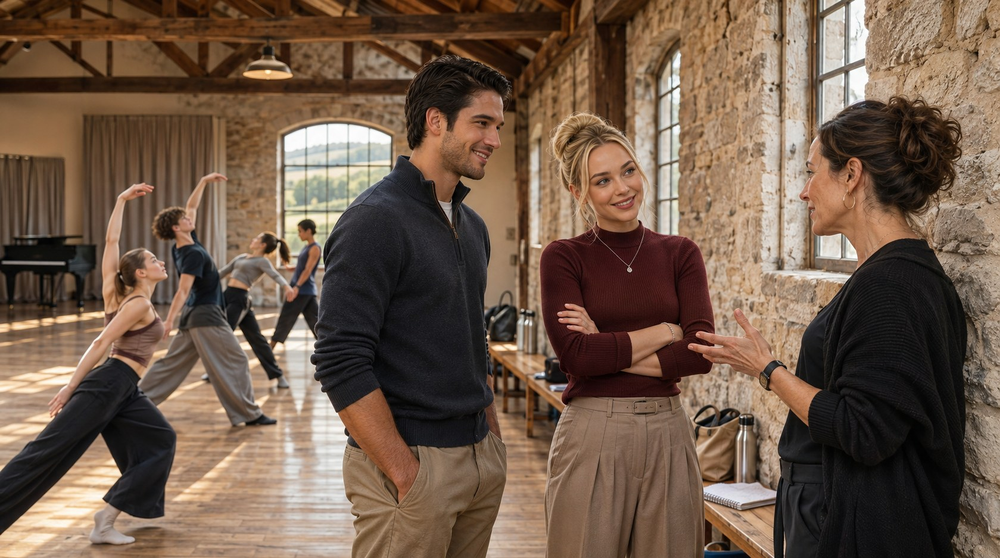
A próbát rövid megbeszélés követte a szülőkkel. Volt, aki a fellépésre szánt ruhákról érdeklődött, más azt szerette volna tudni, mikor indul vissza a busz. Jennifer az utolsó sorban ülve felírta a menetrendet. A következő nyílt próbát fél órával korábban kezdték, így a távolabbról érkező gyerekek is végigtáncolhatták az utolsó számot.
Tizenötmillió dollár a városi levegőért
A világjárvány idején Jennifer és Tyler 15 millió dollárt ajánlottak fel a városi levegő tisztítására. Egy busztelepi bejáráson a műszakiak megmutatták nekik, mennyire eltérő képet ad ugyanaz a mérőeszköz a nyitott kapunál és a szerelőállás mellett. A reggeli műszakváltás, a járművek indulása és az uralkodó szélirány egyaránt megjelent a napi görbén. Tyler végigkövette egy busz útját a telepről az első zsúfolt megállóig.
Jennifer az eredmények ismertetésekor arra kérte a szakembereket, hogy a térképen az iskolákat és a váróhelyeket is tüntessék fel. A lakók így a saját útvonalukon láthatták, hol és melyik napszakban mértek magasabb értéket. A közlekedési vállalat számára pedig összehasonlíthatóvá vált ugyanaz a megálló a járműcsere előtt és után.
Tanóra egy vidéki iskolában
Tyler egyetemi kezdeményezésének tapasztalatai az Oktatás 2030 programban kaptak új szerepet. Egy iskolai bemutatón a pedagógus ugyanazt a természettudományos feladatot adta az osztálynak. A gyerekek a saját ütemükben haladhattak, a tanár pedig észrevette, hogy többen ugyanannál az ábránál akadtak el. Félretették a táblagépeket, és együtt rajzolták fel a megoldást a táblára.
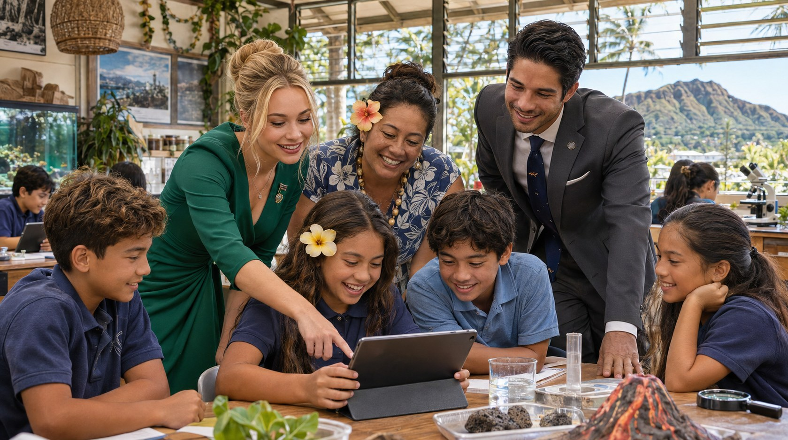
Jennifer az órát követő beszélgetésen arról kérdezte a tanárt, mennyi ideig tartott az első ilyen foglalkozást előkészíteni. Tyler azt szerette volna tudni, mely feladatokat tudják a gyerekek otthon is befejezni. Az Oktatás 2030 költségvetésében a digitális tananyag mellett ezért a tanárok továbbképzése és a vidéki iskolák támogatása is helyet kapott. A tanár eltette a gyerekek rajzait, hogy a következő órán azokból indulhassanak ki.
Két hét Tokióban a Chease testvérekkel
2021 márciusában Jennifer Angelinával és Raimondóval Japánba utazott. A kéthetes küldöttségi programban a vízummentesség előkészítése, az űrkutatási együttműködés és a kiberbiztonság is szerepelt. Jennifer a tokiói tartózkodás egyik szabad délutánját a Ghibli Múzeumban töltötte. Különösen a kézzel rajzolt mozdulatsorok érdekelték. Egymás mellé téve a lapokat pontosan látszott, hány apró eltérés kell ahhoz, hogy a vásznon egyetlen természetes gesztus szülessen.
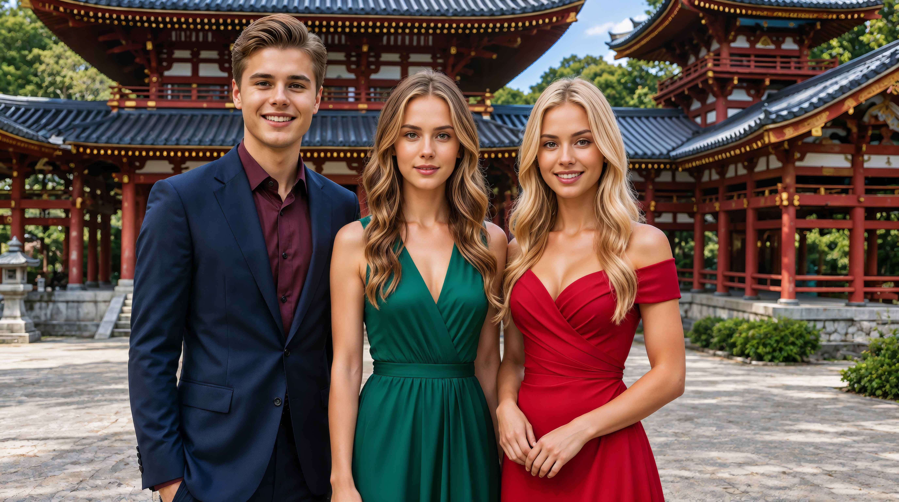
Waikikire március 17-én tértek vissza. A látogatásról szóló beszámolójában Jennifer a múzeumi élményt is felidézte. Egy tervezett digitális tárlathoz később hasonló feladatot adott a szerkesztőknek. Olyan részletet keressenek egy alkotáson, amely mellett a látogató egy teremben talán elsétálna, de a képernyőn kedvére felnagyíthatja.
Bemutató a Kreatív Média Fórumon
Jennifer egy régi waikiki táncelőadás két felvételét vitte magával a Kreatív Média Fórumra. Az egyik az egész színpadot mutatta, a másik egyetlen táncos kezét követte. A hallgatóság először hang nélkül látta a két részletet. Az egykori társulatból meghívott táncos azonnal felismerte a mozdulatot, a fiatal filmesek közül viszont többen a kulissza mögötti zenészt figyelték.
A beszélgetésből élő szerkesztési próba lett. A résztvevők a műsorfüzet alapján azonosították az előadókat, megjelölték a felvétel helyét, és elkülönítették a biztos adatokat az emlékezetből felidézett részletektől. Jennifer a nap végén az eredeti felvétel mellé a táncos magyarázatát is eltette. A digitális múzeum gyűjteményében így később mindkét nézőpont elérhetővé válhatott.
Londonból Dubrovnikba
2021 tavaszán Jennifer édesanyjával, Jessica Walkerrel és nővérével Londonba utazott. Amíg Jessica és Angelina kereskedelmi kérdésekről tárgyaltak, Jennifer a National Galleryben nyitotta meg a waikiki kortárs művészek vendégkurátori programját. Az alkotások mellé helyi történetek is kerültek. Egy külföldi látogatónak az a kikötő, utca vagy családi ünnep is magyarázatra szorulhat, amelyet a művész otthon egyetlen ecsetvonással felidéz.
Júniusban már Tylerrel együtt érkezett Dubrovnikba, a Mediterrán Gazdasági Fórumra. Jennifer a lezárások alatt kidolgozott digitális múzeumi hálózat tervét mutatta be. Egy kis gyűjtemény is elérhetett így olyan iskolákat, ahonnan túl drága lett volna osztálykirándulást szervezni. A terv műszaki oldala különösen érdekelte Tylert. Egy nagy felbontású műtárgyfotó részletei egészen másként látszanak a múzeum vetítővásznán, mint egy diák telefonján. Mindkét látogatónak ugyanazt a tárlatot kellett élvezhetővé tenni.
Orvosi vizit az utazás előtt
Az Egészségügyi Innovációs Alap előkészítésekor a páros a távoli rendelők helyzetével foglalkozott. Egy kontrollvizsgálat egy amazóniai családnak akár egész napos utat is jelenthetett. A távkonzultáció lehetőséget adott a helyi orvosnak, hogy még a beutalás előtt megmutassa a leleteket egy szakorvosnak. Ha személyes vizsgálatra volt szükség, a beteg már úgy indulhatott útnak, hogy a fogadó rendelő ismerte az előzményeket.
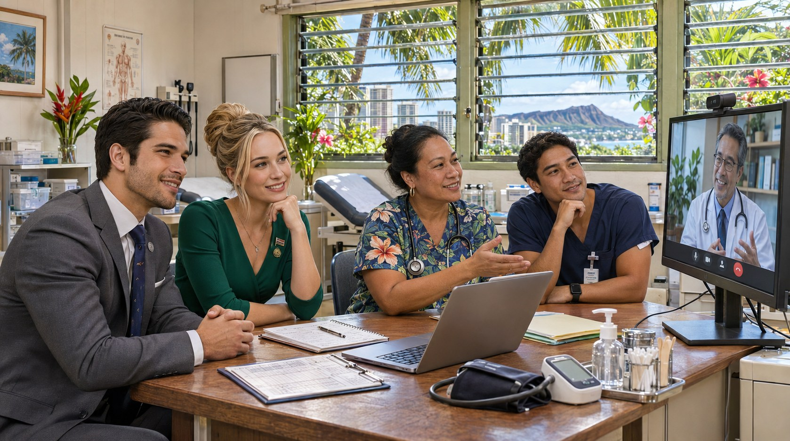
Tyler a kép és a hang minőségétől a leletek továbbításáig követte végig a konzultáció menetét. Jennifer azt tisztázta a finanszírozás tervezésekor, kinek a munkaidejéből telik ki a felkészülés és az utókövetés. A két rendelő között a beteg számára az teremtett folytonosságot, hogy hazatérve a saját orvosától is választ kaphatott a kérdéseire.
Mentési gyakorlat az esős évszak előtt
Egy katasztrófavédelmi gyakorlaton a résztvevők azt próbálták el, hogyan lehet egy folyóparti település gyógyszerigényét jelezni, ha a vihar után elmegy a térerő. Tyler a rádiós asztalnál ült, Jennifer a fogadó raktár munkáját figyelte. A próbán ugyanarról az igényről két külön üzenet futott be. Az egyik a falu nevét használta, a másik a rendelő nevét. A raktáros csak a címzett telefonszáma alapján ismerte fel, hogy ugyanazt a csomagot készítik össze másodszor.
A gyakorlat végére a rendelő és a raktár közös sorszámot adott minden kérésnek. A papírlapon és rádión is használható számozást a helyi önkéntesek próbálták ki az utolsó körben. Jennifer és Tyler megvárták, amíg a visszaigazolás is befutott. Az ellátás szempontjából az volt a döntő pillanat, amikor már a faluban is tudták, melyik szállítmányt várják.
Kupon egy kis szabóműhelynek
A kisvállalkozások digitalizációs programjának egyik bemutatóját egy szabóműhelyben tartották. A tulajdonos addig füzetben vezette a méreteket, külön naptárban a próbákat, az anyagrendeléseket pedig az esti zárás után egyeztette a számlákkal. A támogatási kuponból olyan rendszert vásárolt, amely a megrendeléshez rendelte az időpontot és a szükséges anyagot. Jennifer a próba végén a tulajdonossal összeadta, hány adminisztrációval töltött estét takaríthat meg egy hónapban.
Tylert az érdekelte, marad-e használható másolat a megrendelésekről egy meghibásodás után. Egy próbarendelésen megmutatták a mentést és a visszaállítást. A műhelyvezető maga nyomtatta ki a másnapi munkalapot a visszaállított adatokból. Ezzel zárult a bemutató, a valódi ügyfelek méretei végig a műhelyben maradtak.
Szörfdeszka a mérnökök műhelyéből
A Nova Aurelia Surf & Tech fesztivál ötlete Tyler két kedvteléséből született. A waikiki mérnökök könnyű szénszálas anyagokat fejlesztettek, ő pedig kíváncsi volt rá, hogyan viselkedne egy ilyen anyagból készült deszka a hullámokon. A parton a nézők kézbe vehették a deszkát, mielőtt Tyler vízre szállt vele. Amikor visszaért, a diákok már a készítőktől kérdezhették meg, mitől marad merev egy ennyire könnyű szerkezet.
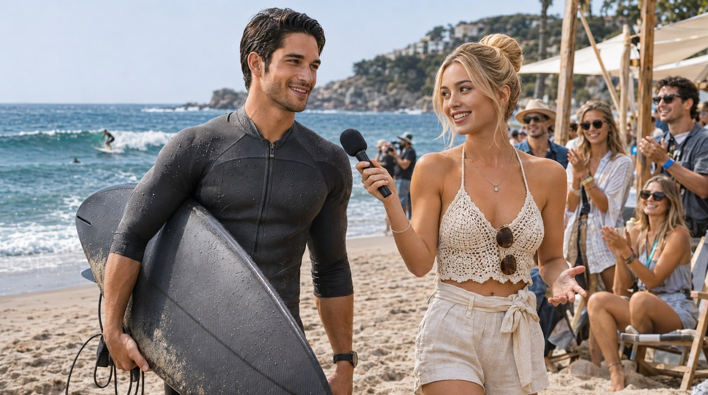
Jennifer a partról közvetített. A műhelyben készült felvételeket a vízen látott fordulókkal párosította, és a beszélgetésbe a fejlesztőket is bevonta. A fesztiválon a sporthoz így olyan fiatalok is közel kerültek, akiket elsősorban a fizika vagy a filmezés érdekelt. Tyler számára külön öröm volt, amikor a bemutató után még a deszkánál maradtak, és a sérült felület javításáról faggatták.
Drónverseny a szerelőpad mellől
Tyler ifjúsági drónversenyén a futamok között a közönség is bejárhatta a szerelősátrat. Egy csapat gépe az edzésen minden szűk bal kanyarnál veszített a magasságából. Az egyik diák a vezérlés beállítását gyanította, a másik egy korábbi koccanásra emlékezett. Tyler tartotta a lámpát, amíg szétszedték a burkolatot. Az egyik légcsavaron apró csorbulás látszott, amelyet felülről addig eltakart a védőkeret.
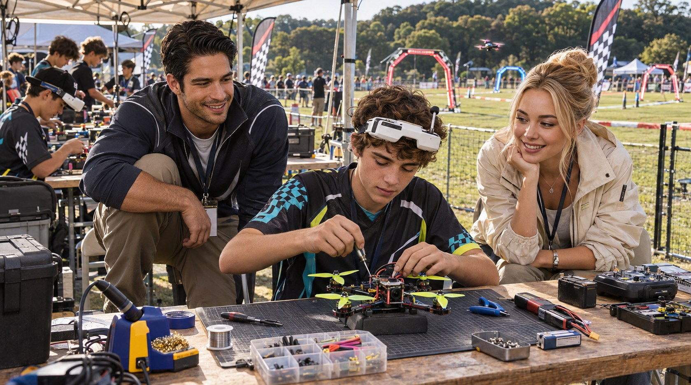
Jennifer a javítást is felvette. A csapat a pótalkatrésszel visszaért a következő rajtra, a két felvételen pedig jól lehetett látni, hogyan változott a gép mozgása ugyanabban a kanyarban. A pálya mellett az űrprogram mérnökei fogadták az érdeklődőket. Délután a legtöbb kérdést az a diák kapta tőlük, aki a hibát megtalálta.
A Waikiki First rövidfilmjeinek vetítése
Jennifer a Waikiki First kampány rövidfilmjeiben hazai műhelyeket, sportolókat és építkezéseket mutatott be. Az egyik vetítésre a forgatások szereplőit is meghívták. Egy fiatal mérnök csak a nézőtéren látta először, melyik jelenet került be a csapatával töltött egész napból. A vetítés után elkérte a mikrofont, és bemutatta a hátul ülő kollégáját, aki a felvételen látható prototípust összeszerelte.
Tyler az előcsarnokban a filmekben használt sporteszközöket állította ki. A látogatók kézbe vehették őket, amíg Jennifer a szereplőkkel beszélgetett. A kampányhoz készült ruhákból kis sorozat került forgalomba. A fiatal tervezőknek a vetítés utáni este hozta az első alkalmat, hogy a saját darabjaikat a közönség soraiban lássák viszont.
Áramszüneti próba egy parti rendelőben
Egy tengerparti rendelő új akkumulátoros tárolóját terhelés alatt is kipróbálták. A helyi villanyszerelő leválasztotta az épületet a hálózatról, Tyler pedig a gyógyszerhűtő hőmérőjét és a vizsgálók világítását figyelte. Az ápolók előzőleg megjelölték, melyik helyiségre van feltétlenül szükségük egy éjszakai ellátáshoz. Az ügyeleti szobában egyetlen hiányzó lámpa rögtön feltűnt nekik.
A próba után átkötötték a lámpát a tartalék áramkörre. Jennifer a beszerzés elszámolásához csatolta a helyi személyzet észrevételeit. A Zöld Infrastruktúra Programban egy ilyen kis rendelő egészen más feladatot adott a tervezőknek, mint a városi járműtelep. Itt akár egy kisebb tároló is életbevágó különbséget jelentett, ha valóban a megfelelő készülékeket látta el.
Családi felszólalás a Golden Future Forumon
2023-ban Nova Aurelia adott otthont a Golden Future Forumnak. A közös megnyitón Chease Young után gyermekei is szót kaptak. Raimondo a digitális piacok változásáról beszélt, Angelina a fenntartható beruházásokról, Jennifer pedig a modernizáció költségeit hozta közel a hallgatósághoz. Egy kisvállalkozás példáján követte végig, meddig tart az állami támogatás, és melyik hónaptól kell a vállalkozónak a saját bevételéből fizetnie a szolgáltatást.
Az előadást követő beszélgetésben egy befektető arra volt kíváncsi, mi történik azokkal a programokkal, amelyekre a támogatás lejárta után már senki sem fizet elő. Jennifer számára éppen ez indokolta az utókövetést. A fórum után a felszólalás mellé az értékelés szempontjait is közzétették, így a megnyitó felvételét később az egyetemi órákon is fel tudták használni.
A Tiszta Víz kezdeményezés
2024 augusztusában a waikiki köztévé szenátusi vitát rendezett. Jennifer és Angelina itt jelentette be a Tiszta Víz kezdeményezést, amely az ország ivóvízkészleteinek bővítését célozta. A vitában felszínre került egy régi költségvetési kérdés is. Egy új vízellátó rendszer átadását könnyű egyetlen év beruházásai között feltüntetni, az üzemeltetés és a vízminőség ellenőrzése viszont évtizedekre feladatot ad a helyieknek.
Jennifer számára a bejelentés után kezdődött az aprólékosabb munka. A választókerületi beszélgetéseken egy település lakóit érthetően a saját kútjuk, vezetékük és számlájuk érdekelte. Tyler a zöld infrastruktúra fejlesztésében már találkozott ugyanezzel a léptékváltással. Egy országos hálózat tervét mindketten könnyebben tudták elmagyarázni, ha egyetlen utca példáján mutatták meg, mi változik az ott élők számára.
Pohárköszöntő Angelina esküvőjén
2024. október 12-én Angelina és Taylor Lautner a Palazzo Versace tengerparti szárnyában házasodtak össze. Jennifer a családtagokkal és az egykori évfolyamtársakkal ült az óceán fölé épített emelvény előtt. A szertartás után a násznép a palota kristálykupolás szalonjába ment át vacsorázni. Jennifer ott emelt poharat a nővérére.
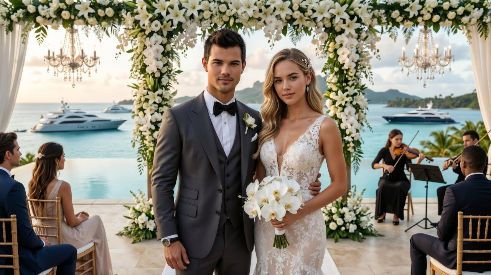
A köszöntőben Jennifer felidézte, hogyan talált Angelina a legsűrűbb napokon is időt a testvéreire, és hogyan lett az egyetemi társaságból lassan egy nagyobb család. Raimondo utána már megengedhetett magának néhány tréfát is. Tyler az asztalnál azokkal a régi barátokkal találkozott újra, akik a két párt még az első közös egyetemi évekből ismerték.
Július negyedike Washingtonban
2025. július 4-én Jennifer a szüleivel és testvéreivel az amerikai függetlenség 249. évfordulójára érkezett Washingtonba. A Fehér Háznál díszszázad fogadta a waikiki küldöttséget. Az ünnepi ebéden Chease Young és Jessica Walker mellett mindhárom gyermekük helyet kapott az amerikai elnök és a kormány tagjainak asztalánál.
Jennifer számára az út egyúttal visszatérést jelentett a szülővárosába. Gyermekkorában innen indult el Nova Aureliába, majd amerikai diákévei után ismét Waikikit választotta otthonául. Húsz évvel a főtéri koronázás után ugyanazokkal a testvérekkel állt a családi fényképen. Ekkorra mindhárman saját szenátusi munkájukat is képviselték a látogatáson.
Egy este Rómában
A Colosseum előtt készült közös fényképükön Jennifer zöld ruhában, Tyler sötétkék öltönyben áll. A háttérben még járnak a látogatók, az árkádokon át besüt a lemenő nap. Jennifer munkájában általában pontosan megtervezi, mit mutat majd egy felvétel. Ezen a képen a körülöttük sétáló emberek és az esti fény legalább annyit mesélnek az utazásról, mint a két elegáns ruha.
Olaszországhoz a divat révén is kötődik. A Gucci, a Prada és az Armani tulajdonosaként ismeri azt az utat, amelyet egy kollekció a műhelyasztaltól a kifutóig megtesz. A milánói bemutatókon Selenával együtt gyakran maguk is a fotósok elé kerülnek. Tyler a forgatásokról ismerős türelemmel várja ki ezeket a perceket. A közös városi sétákra rendszerint akkor jut idő, amikor a hivatalos fényképek már elkészültek.
A díjátadó vendégei
A közszolgálati innovációért kapott díj átadásán a digitális ügyintézésen dolgozó munkatársak is jelen voltak. Jennifer az elsőként csatlakozó hivatalok ügyintézőinek mondott köszönetet. Ők vezették azt a hibajegyzéket, amelybe a polgárok szavaival írták le, egy-egy képernyőnél min akadtak el. Tyler a hálózatot fenntartó technikusokat kérte meg, hogy a közös fényképen álljanak melléjük.
Az oktatási érdemérem átadása egészen más társaságot hozott össze. A pedagógusok és az egykori ösztöndíjasok között voltak, akik az első iskolai gépek kiszállítása óta ismerték egymást. A fogadás alatt egy tanár elővette az osztály régi munkalapját. Tyler azonnal felismerte rajta a programozási feladatot, a tanár pedig megmutatta azt a kérdést, amelyet azóta minden évfolyam másképpen old meg.
Hazatérés Nova Aureliába
Jennifer és Tyler otthona a Hercegi Palota szomszédságában, a főváros tengerparti negyedében áll. Jennifer egy hosszú ülésnap után is szívesen indul koncertre. Máskor elővesz egy James Bond-filmet, amelynek fordulatait már mindketten ismerik. Tyler inkább a partot figyeli. Ha jók a hullámok, másnap korán kel, hogy az első megbeszélés előtt még vízre szállhasson.
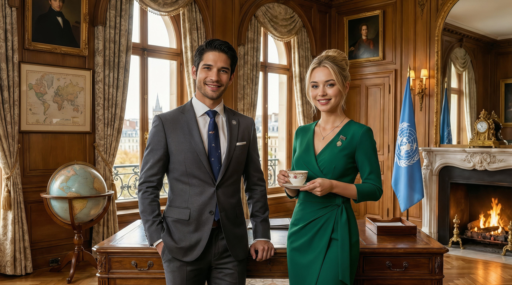
A közös naptárban egymás mellé kerülhet egy iskolalátogatás, egy bemutató és egy családi vacsora. A legnehezebben megszervezhető program ma is az a fajta délután, amelyből az egyetemen annyi jutott nekik. Ilyenkor Jennifer leteszi a telefonját, Tyler elmeséli, min dolgoznak éppen a műhelyben, és mire hazaérnek a partról, rendszerint már a következő ötleten vitatkoznak.